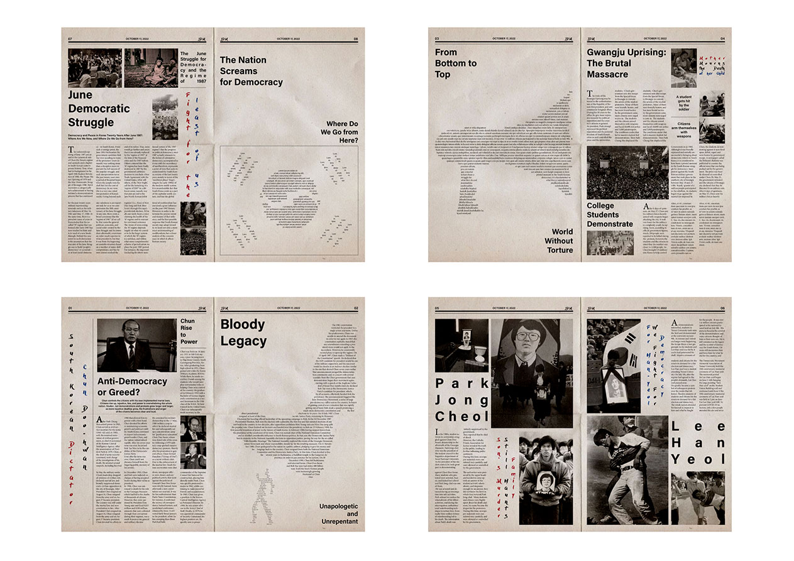

1987: The Road to Full Bloom aims to show young Koreans and other societies around the globe that we must not lose sight of the past and continue to stay vigilant.
It draws from the events of the Gwangju Uprising of 1980, where South Korean citizens bravely rose up against the military dictatorship, demanding democracy and freedom.
Though met with violent repression, the spirit of the movement paved the way for lasting political change.
This project serves as a cautionary tale with universal relevance, reminding us of the sacrifices necessary to influence real political transformation.